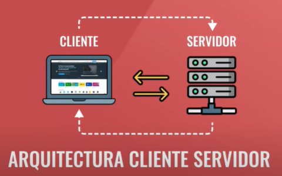

Arquitectura cliente-servidor
¿Qué es la arquitectura cliente-servidor?
El clliente-servidor es un modelo de diseño de software en el que las tareas se reparten entre los proveedores de recursos o servicios, llamados servidores, y los demandantes llamados "clientes". El cliente y el servidor son dos computadoras. El cliente es quien pide información y el servidor es quien entrega la información siempre y cuando el cliente tenga los permisos.

Front-End
¿Qué es el Front-End?
Es la parte del sitio web a la que el usuario pueda llegar a acceder directamente. Son todas las tecnologías de diseño y desarrollo web que corren en el navegador y que se encargan de la interactividad.
¿Cuales son los roles y las funciones de ellos dentro del Front-End?
- UI(User Interface)
- Maquetador
- Programador Front-End
Es la persona encargada de realizar diseños en la página web, esta se encarga de la interacción del usuario, de todas las etapas que se va a realizar para alguna tarea, esta persona se enfoca en el usuario asegurandose que el sitio web llegue a ser atractivo a la vista y que se pueda interactuar con el.
Es la persona que se encarga de recoger las maquetas que ha diseñado el UI y así llevarlo a codigo en HTML, CSS y JavaScript. En este rol se verifica que el código funcione correctamente en varios navegadores, que sea responsive design y todo lo que tenga que ver con la parte visual de una página web.
Es la persona que programa lo lógico del lado del cliente, haciendo uso de alguna libreria o framework, consume una API que bien podría venir del back-end y este no se encarga del diseño.
¿Cuales son los principales lenguajes y frameworks usados en el Front-End?
Programas usados:
- Sketch
- Figma
- Adobe XD
Lenguajes de programación:
- HTML
- FIGMA
- JavaScript
Frameworks:
- Vue.js
- React.js
- Angular.js
Back-End
¿Que es el Back-End?
Se refiere a la parte lógica de una página web o sea la arquitectura interna del sitio que asegura que todos los elementos desarrollen una función de manera correcta. Se basa en el código interno de la página y se encarga de la funcionalidad del sitio, la seguridad y la optimización de los recursos.
¿Cuáles son y que función tienene los roles del Back-End?
- Backend developer
- Database Administrador (DBA)
- Administrador de sistemas
Se encarga de la lógica del negocio (el código del lado izquierdo del servidor) y crea las APIs para que el Frontend pueda consumirlas.
Diseá, implementa, mejora y mantiene el sistema de las bases de datos.
Se encarga de administrar los sistemas, gestiona la instalación, soporte y mantiene el servidor en donde se aloja la web o app.
¿Cuáles son los principales lenguajes de programación y frameworks del backend?
Lenguajes de programación:
- PHP
- Java
- Ruby
- Phyton
Frameworks
- Laravel
- Symfony
- Django
¿Qué es un stack?
Es una pila de tecnologías que se utilizan para desarrollar un software, se suele llamar programador full stack al programador que hace el back-end y front-end.
Ejemplos de stack:
El stack mas usado fue LAMP
- Linux: como sistema operativo.
- Apache: como servidor web.
- MySQL: como base de datos.
- PHP: como lenguaje de programación.
El segundo stack MEAN
- Mong: para la base de datos.
- Express: como frameworks de Node.js.
- Angular.js: para la parte de front-end.
- Node.js: para la parte de back-end.